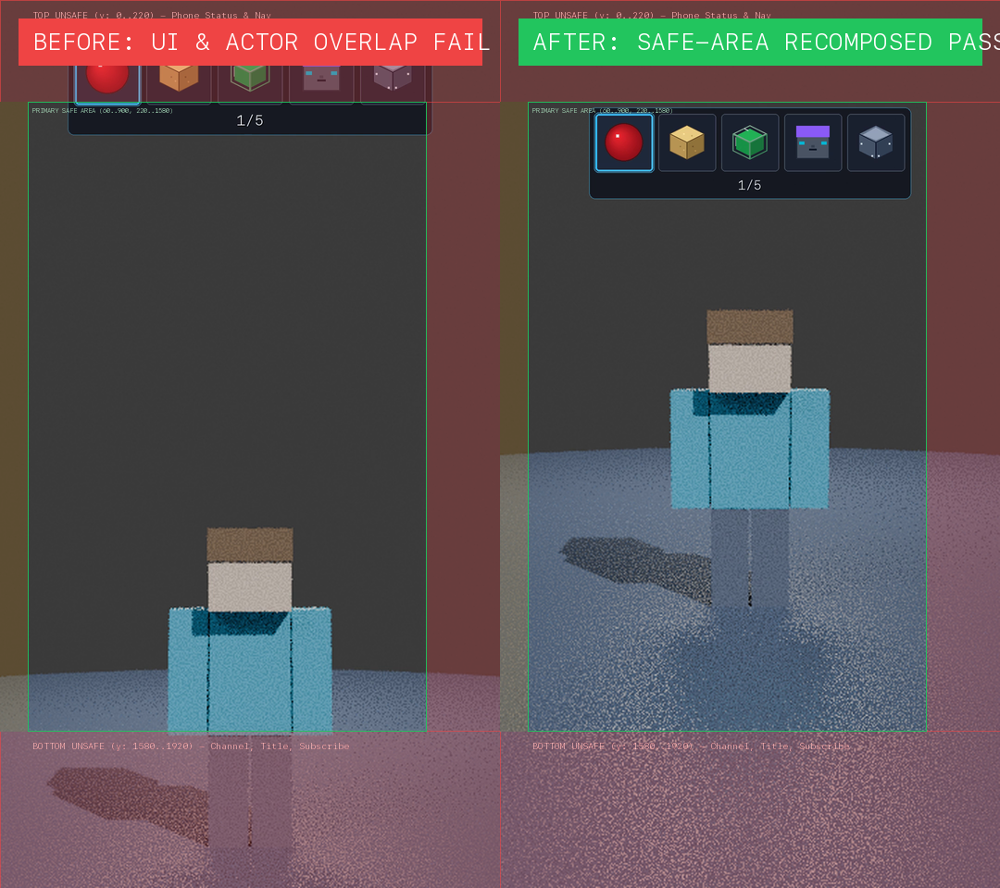
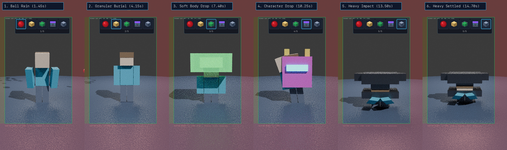

YouTube Shorts Safe-Area Mobile Remediation
Full recomposition of the 1080x1920 viewport ensuring zero occlusion by phone status bars, YouTube header, lower channel title & subscribe buttons, and right-hand action rail, while preserving the mastered 192 kbps broadcast audio stream bit-for-bit.
1. Before vs. After Composition Comparison
Comparison showing the original uncalibrated placement (covered by native YouTube Shorts UI) versus the remediated composition with all elements strictly bounded within the primary safe area.

2. Sequence Safe-Area Contact Sheet
Key frames across all 5 physical effects (Ball Rain, Granular Burial, Soft Body Drop, Character Drop, Heavy Crush) with safe-area overlays and UI boundary masks.

3. Synchronized Audio/Video Production Renders
Final renders muxed with the Gate 8.8B mastered broadcast audio stream (-14.6 LUFS, -2.2 dBTP True Peak, AAC 192 kbps CBR).
Production Master (1080x1920)
Full resolution 1080p mobile broadcast master (19 MB, 15.000s)
Preview Master (360x640)
Web-optimized lightweight proxy stream (2.6 MB, 15.000s)
4. Automated Safe-Area & Layout QA Verification
Verification results from layout-qa-report.json and npm run qa:8.8a.
| Check Name | Safe Area Requirement | Measured Value | Clearance Margin | Status |
|---|---|---|---|---|
| hotbar_bounding_box_inside_safe_area | Inside [60, 900] × [220, 1580] | X=[192, 888], Y=[232, 430] | +12 px top clearance | PASS |
| counter_inside_safe_area | 1/5 → 5/5 counter visible | X=[516, 561], Y=[389, 410] | Inside capsule | PASS |
| actor_centroid_inside_safe_area | Actor mid-torso centered (y ≈ 960) | Mid-torso y=960.0, Centroid=(541.8, 1048.2) | Screen center | PASS |
| key_impact_centroid_inside_safe_area | All 5 impact centroids in safe area | All 5 centroids inside safe area | Optimal drop view | PASS |
| no_critical_overlay_in_bottom_unsafe_zone | Zero UI / actor in y ∈ [1580, 1920] | Actor feet y = 1319 | +261 px clearance | PASS |
| no_critical_overlay_in_right_unsafe_zone | Zero UI / actor / anvil in x ∈ [920, 1080] | Per-frame worst-case X = 887.7 (Actor 726.6, Anvil 887.7) | +32 px clearance (+12 px to safe border 900) | PASS |